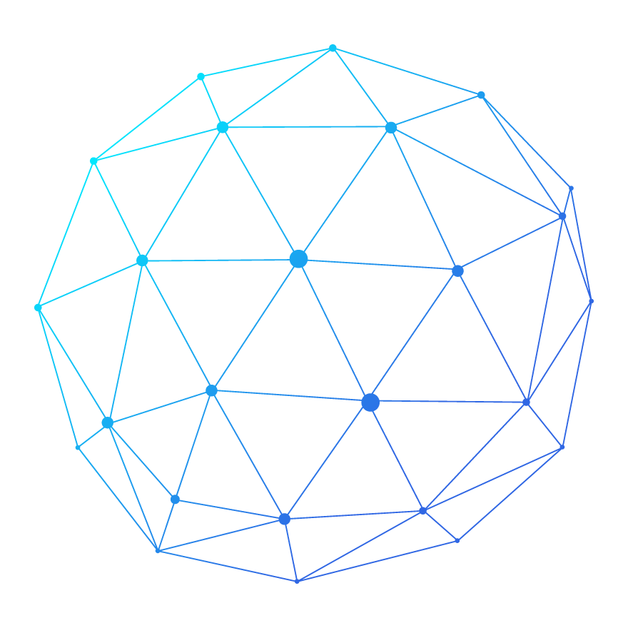
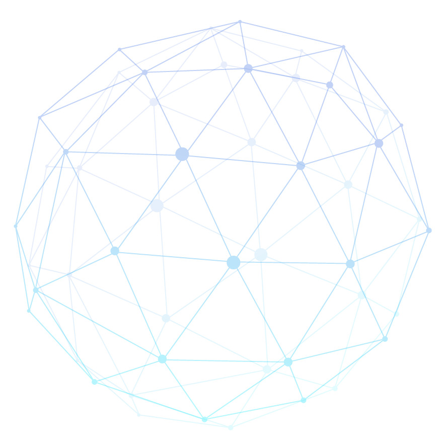
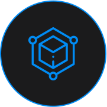
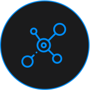
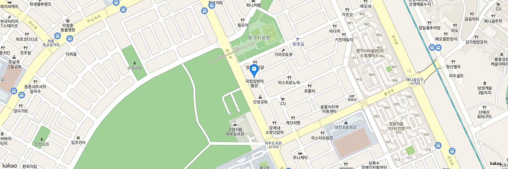

Medical Intelligence
For Better Cancer Care
For Better Cancer Care


ABOUT US
Medical Data
Curation
High prediction for
cancer patient
cancer patient
APPLICATION
SERVICE
Breast cancer
classification system
classification system
MEDICAL
RESEARCH
For cancer treatment
and management
and management
WHO WE ARE
국립암센터 인공지능사업팀은 다양한 의료 데이터를 구축하고 의료 인공지능에 관한 연구를 수행하고 있습니다. 또한, 환자와 의료진을 위한 공익사업의 일환으로 암 질환 진단 보조
서비스를 개발 및 제공하고 있습니다.
팀 구성원은 의료 전문가와 공학 박사 등 각계 전문가로 구성되어, 차세대 암 연구 선도 및 보건의료 인공지능 분야의 중추적인 연구거점으로 발전을 도모하고 있습니다.
팀 구성원은 의료 전문가와 공학 박사 등 각계 전문가로 구성되어, 차세대 암 연구 선도 및 보건의료 인공지능 분야의 중추적인 연구거점으로 발전을 도모하고 있습니다.
WHAT WE DO
가까운 미래에 인공지능은 우리 사회의 많은 것을 바꿀 것입니다. 의료 영역에서도 인공지능은 질병의 진단, 건강 검진, 고위험군 발견, 치료선택, 치료결과 예측, 만성 질환 관리
등에 활용될 것입니다. 또한 의료서비스 개선과 건강인의 라이프 케어에도 이용되어 헬스케어 산업 전반에 영향을 미칠 것입니다.
의료데이터는 매우 빠른 속도로 축적되고 있습니다. 의료진들이 진료를 하며 생성되는 데이터와 검사장비 및 의료기기에서 생산되는 텍스트와 영상 데이터뿐 아니라 이제는 유전체,
라이프로그, 바이오 시그널, 동영상 등의 데이터도 쌓이고 있습니다. 이 데이터를 통해서 의학의 많은 지식을 확대할 수 있었지만, 이 데이터들이 의료현장에서 통합적으로 분석되어
의사결정에 적극적으로 활용되는 경우는 극히 일부분입니다. 인공지능 기술은 정량적으로 표현하기 어려운 데이터에서 의미를 만들어내고, 다양한 데이터를 결합하여 의료진의 의사결정을
도와줄 수 있습니다.
인공지능은 다양한 질병의 예방, 진단, 치료, 관리에 이용될 것입니다. 특히 암은 현대에서 가장 중요한 질병으로 많은 의료자원이 암 치료와 관리에 사용됩니다.
국립암센터 인공지능사업팀에서는 암의 진단, 치료, 생존자 관리 등 암환자 케어의 모든 영역에서 인공지능 기술을 통하여 의료서비스의 향상을 추구하고 있습니다. 인공지능사업팀에서는 의료인공지능 관련 연구와 사업을 진행하고 있으며 의료 데이터의 구축, 인공지능 모델 개발, 인공지능 플랫폼 개발을 수행하고 있습니다. 또한 의료 영역에서 인공지능기술이 확대되고 활용될 수 있도록 다양한 인공지능 기업, 기관, 대학과 협업하고 있습니다.
국립암센터 인공지능사업팀에서는 암의 진단, 치료, 생존자 관리 등 암환자 케어의 모든 영역에서 인공지능 기술을 통하여 의료서비스의 향상을 추구하고 있습니다. 인공지능사업팀에서는 의료인공지능 관련 연구와 사업을 진행하고 있으며 의료 데이터의 구축, 인공지능 모델 개발, 인공지능 플랫폼 개발을 수행하고 있습니다. 또한 의료 영역에서 인공지능기술이 확대되고 활용될 수 있도록 다양한 인공지능 기업, 기관, 대학과 협업하고 있습니다.

헬스케어 인공지능
사업 기획
사업 기획
스마트헬스(모바일, IOT,
전자동의서 등) 기획 및 지원
전자동의서 등) 기획 및 지원
인공지능분석용 데이터
연계 플랫폼 구축
연계 플랫폼 구축
의료빅데이터
머신러닝 관련 업무
머신러닝 관련 업무

병원행정데이터
추출 및 분석
추출 및 분석
정밀의료서비스
연계 업무
연계 업무
WHAT WE HAVE
자율적 연구
국립암센터 인공지능사업팀에서는 의료 진단에 도움이 되는 연구 주제를 자유롭게 선정하며, 의료 전문가의 주도 하에 효율적인 의료 인공지능 연구 및 사업을 수행하고
있습니다.
데이터 보유
국립암센터 헬스케어플랫폼센터 소속으로서, 기관 내 여러 부서와 협력하며, 오랜 기간 축적되어온 암 빅데이터를 기반으로 질병의 예방, 치료 및 사후 관리를 위한 연구를
하고 있습니다.

커뮤니티와 능동적 협력
대기업, 대형병원, 스타트업 등 국내 다수 기관과 긴밀하게 관계를 맺고 우리나라의 의료 인공지능 인프라 구축을 위해 앞장서고 있습니다.
WHERE WE ARE
국립암센터 인공지능사업팀
경기 고양시 일산동구 일산로 364 (우)10406

Address
경기 고양시 일산동구 일산로 323 국립안센터
E-mail
0000@ncc.re.kr


Copyright National Cancer Center. All Rights Reserved.